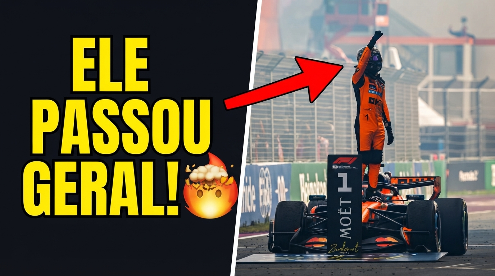

Norris vence na Holanda, supera Antonelli no fim e Bortoleto termina fora dos pontos

Lando Norris venceu o GP da Holanda de Fórmula 1 2026 neste domingo (23), em Zandvoort, em uma corrida marcada por chuva, acidentes, bandeira vermelha e uma disputa estratégica que só foi definida nas voltas finais. O piloto da McLaren largou da pole, perdeu a liderança no início, mas reagiu na reta final para superar Kimi Antonelli e conquistar sua segunda vitória consecutiva na temporada.
Antonelli terminou em segundo e manteve a liderança do Mundial de Pilotos. George Russell completou o pódio, garantindo mais um resultado importante para a Mercedes. Lewis Hamilton foi quarto, seguido por Charles Leclerc e Oscar Piastri.
Para Gabriel Bortoleto, entretanto, o domingo foi muito mais complicado. O brasileiro largou em nono, perdeu posições na primeira volta, rodou em uma pista traiçoeira e ainda precisou lidar com uma investigação por deixar os boxes com o sinal vermelho. No fim, terminou apenas na 13ª colocação.
Gostou do conteúdo? Confira nossa loja!

Norris transforma uma corrida complicada em vitória
O resultado do GP da Holanda 2026 é especialmente importante para Norris porque a vitória não veio de maneira dominante.
Depois de largar na primeira posição, o piloto da McLaren não conseguiu controlar a corrida desde o início. A pista apresentava pontos úmidos por causa da chuva que rondava Zandvoort, tornando a largada e a escolha de pneus particularmente delicadas.
Mesmo assim, Norris conseguiu permanecer na disputa pela vitória.
A virada aconteceu na segunda metade da corrida. Depois de sua parada na volta 48, o britânico retornou cerca de quatro segundos atrás de Antonelli, mas rapidamente começou a descontar a diferença.
Na volta 50, Norris foi 1s5 mais rápido. Na passagem seguinte, tirou mais 1s6.
A vantagem de Antonelli simplesmente desapareceu.
Antonelli perde a liderança, mas segue no topo do campeonato
Kimi Antonelli chegou a controlar a prova e parecia ter condições de conquistar mais uma vitória para a Mercedes.
O italiano, porém, encontrou Norris cada vez mais próximo.
A situação ficou ainda mais interessante quando Hamilton passou a fazer parte da disputa. Na volta 54, Antonelli tentou se aproximar do piloto da Ferrari, enquanto Norris aproveitou a movimentação para atacar.
O piloto da McLaren colocou o carro por fora e conseguiu ultrapassar Antonelli.
Pouco depois, também superou Hamilton e assumiu definitivamente a liderança.
Apesar da derrota, o segundo lugar teve enorme importância para Antonelli. O resultado permite ao piloto da Mercedes manter a liderança do Mundial de Pilotos, enquanto Norris continua pressionando na disputa pelo campeonato.
A estratégia de pneus foi decisiva
A estratégia poderia ter mudado completamente o resultado.
Antonelli chegou a colocar pneus macios durante a fase final da corrida, enquanto Norris permaneceu com pneus duros.
Em teoria, o italiano teria vantagem para atacar.
Na prática, isso não aconteceu.
Norris conseguiu aumentar novamente a diferença e mostrou excelente gerenciamento dos pneus duros, neutralizando a vantagem de composto de Antonelli.
A diferença chegou a aproximadamente 12 segundos e permaneceu sob controle até a bandeirada.
Verstappen abandona após acidente em Zandvoort
O grande choque do início do GP da Holanda aconteceu com Max Verstappen.
Na segunda volta, o piloto da Red Bull perdeu o controle do carro na Curva 14, justamente em uma região afetada pelas condições de pista, e atingiu a barreira externa.
Verstappen abandonou a corrida.
O acidente provocou a bandeira vermelha e interrompeu a prova praticamente no começo.
O resultado representa um golpe importante para o piloto da casa, que tinha uma das maiores expectativas da torcida holandesa em Zandvoort.
Bortoleto vive domingo de recuperação, mas termina em 13º
Gabriel Bortoleto teve um dos domingos mais difíceis de sua temporada.
O brasileiro largou em nono, mas caiu para 14º logo na primeira volta. Pouco depois, também rodou na mesma região em que Verstappen havia perdido o controle.
A diferença é que Bortoleto conseguiu evitar o muro.
O incidente, porém, comprometeu sua corrida e obrigou a Audi a adotar uma estratégia de recuperação.
Na volta 12, Bortoleto fez sua primeira parada e colocou pneus médios. Pouco depois, surgiu outro problema: a direção de prova anunciou uma investigação porque o brasileiro teria deixado os boxes enquanto o sinal vermelho estava ativo.
A situação poderia resultar em uma punição adicional.
Mesmo enfrentando dificuldades, Bortoleto conseguiu recuperar algumas posições durante a corrida. Ultrapassou Colapinto, Pérez e Bottas e chegou a avançar para a 12ª posição.
Na volta 24, porém, o brasileiro relatou pelo rádio uma possível falta de potência.
A Audi informou que não identificava nenhuma anormalidade nos dados naquele momento.
Mais tarde, Bortoleto realizou outra parada e voltou a lutar no pelotão intermediário.
Nas voltas finais, chegou muito perto de Arvid Lindblad, mas não encontrou espaço para completar a ultrapassagem.
O brasileiro recebeu a bandeirada em 13º lugar e terminou fora da zona de pontuação.
Mercedes amplia protagonismo com dois carros no pódio
Mesmo sem vencer, a Mercedes teve outro domingo extremamente positivo.
Antonelli terminou em segundo e Russell em terceiro, colocando os dois carros da equipe no pódio.
Hamilton também apresentou um bom ritmo e terminou em quarto pela Ferrari.
O resultado mostra novamente a força da Mercedes na temporada 2026 e mantém a equipe como uma das principais referências do campeonato.
A disputa pelo título, entretanto, continua aberta.
Norris agora chega embalado por duas vitórias consecutivas, enquanto Antonelli segue acumulando pontos importantes e preservando a liderança.
Resultado do GP da Holanda 2026
1. Lando Norris – McLaren
2. Kimi Antonelli – Mercedes
3. George Russell – Mercedes
4. Lewis Hamilton – Ferrari
5. Charles Leclerc – Ferrari
6. Oscar Piastri – McLaren
7. Liam Lawson – Red Bull Racing
8. Nico Hulkenberg – Audi
9. Fernando Alonso – Aston Martin
10. Pierre Gasly – Alpine
11. Yuki Tsunoda – Racing Bulls
12. Arvid Lindblad – Racing Bulls
13. Gabriel Bortoleto – Audi
14. Franco Colapinto – Alpine
15. Sergio Perez – Cadillac
16. Carlos Sainz – Williams
17. Alexander Albon – Williams
18. Valtteri Bottas – Cadillac
19. Esteban Ocon – Haas
20. Lance Stroll – Aston Martin
21. Oliver Bearman – Haas
22. Max Verstappen – Red Bull Racing (DNF)
O que o resultado muda na temporada 2026?
A vitória em Zandvoort coloca Norris em uma posição estratégica importante para a sequência do campeonato.
O britânico chegou às férias de verão já competitivo e agora retorna com duas vitórias consecutivas. Mais do que o resultado isolado, a forma como Norris venceu na Holanda chama atenção.
Ele precisou recuperar uma corrida que parecia escapar de suas mãos e demonstrou ritmo suficiente para superar Antonelli mesmo em uma estratégia aparentemente menos favorável na fase final.
Antonelli, por outro lado, sai de Zandvoort com a liderança do campeonato preservada.
Isso cria uma situação interessante para as próximas etapas: Norris está crescendo justamente enquanto Antonelli continua pontuando forte.
A margem entre os dois será um dos principais pontos de atenção da próxima fase da temporada.
Para Bortoleto, o 13º lugar representa uma oportunidade perdida de pontuar, mas também mostra capacidade de recuperação depois de uma sequência de problemas.
O brasileiro terá como principal objetivo transformar esse ritmo de recuperação em resultados concretos nas próximas corridas.
Perguntas frequentes sobre o GP da Holanda 2026
Quem venceu o GP da Holanda de Fórmula 1 2026?
Lando Norris venceu o GP da Holanda de 2026, em Zandvoort, conquistando sua segunda vitória consecutiva na temporada.
Quem terminou em segundo lugar?
Kimi Antonelli terminou em segundo lugar pela Mercedes e manteve a liderança do Mundial de Pilotos.
Gabriel Bortoleto pontuou na Holanda?
Não. Bortoleto terminou o GP da Holanda na 13ª posição e ficou fora da zona de pontuação.
O que aconteceu com Max Verstappen?
Verstappen perdeu o controle da Red Bull na segunda volta, atingiu a barreira externa e abandonou a corrida.
Quem completou o pódio?
Lando Norris venceu, Kimi Antonelli terminou em segundo e George Russell ficou com a terceira posição.
Norris está na briga pelo campeonato?
Sim. A sequência de vitórias aumenta a pressão sobre Antonelli e fortalece Norris na disputa pelo Mundial de Pilotos de 2026.
Leia também no Ponto de Frenagem: